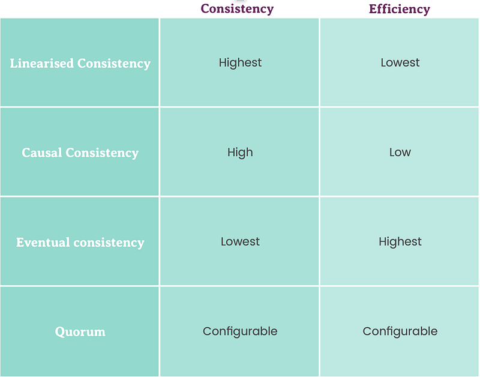

While designing an enterprise level software system, we hear a lot about managing consistency, scalability or performance of that system architecture. In large scale software system like Facebook, Amazon or Netflix, millions of users are hitting servers per second and the load is so high that you cannot manage it with a single large computer . Hence multiple servers are running the same copy of the software which are exposed by a proxy server. Now we need the data on these servers to be consistent. Let’s talk about the elephant in the room ‘Consistency’.
What do you mean by Consistency
Consistency means if there is change made in the state (or data) of the system, it will be show the consistent output everywhere and everytime. Now in simple words, if you press the like button on your friends photo on facebook with 99 likes and it becomes 100. If you and your friend are in different continents, both should see 100 likes even after refreshing multiple times.
Is it so important to have such high consistency on Facebook’s like feature. No! but for banking systems its essential. So lets discuss how you can configure consistency of your software system as per you business needs.
Levels of consistency
Generally, consistency in distributed systems are classified into 4 categories namely
- Strict or Linearised consistency
- Causal consistency (it cause-al not casual)
- Eventual consistency
- Quorom

Strict or Linearised consistency
When the system needs to highly consistent to its limits, then linearised consistency approach can be used. In this, the request are handled by the system one at a time linearly. Assume it like a single threaded ordered operation which ensures outcome of every processed request is consistent before handling the next request.
You must have guessed it right, it’s low performant. Moreover, there is a head of blocking issue which means if a long running request is stuck in the system, the next request needs to wait. Though you can put a time-to-live limit on the request to manage this issue but it degrades the performance. High consistency is a tradeoff for performance here.
Causal consistency
If you are a smart ass guy, you must have thought why we need to linearise the whole system when we can handle only the relevant request sequentially and others can run in parallel.
Well ! Causal consistency is that approach in which system handler the requests (or operations) in a sequential and ordered manner only if they are related whereas other requests can be handled in parallel.
Causal consistency approach definitely offers high performance, availability as compared to linearised consistency approach but is somewhat less consistent. (Why ? Well how will you perfectly determine if two requests are related in the same context or not. Well think about it)
Eventual consistency
When immediate consistency is not the priority for you, rather you need high availability for a system like social media platform or Tinder etc. Go for eventually consistently in which system ensures consistency not immediately but at a certain point of time in the near future (eventually).
This approach can help alot in handle enormous load as you can use techniques like write back caching or message queues in order delegate an operation if that doesn’t require immediate attention.
Yes! It’s offers less degree of consistency than prior approaches but trade off offers high availability and performance with ability to handle requests concurrently.
Quorum
Consistency is an expensive affair so you need to think twice to what extent you need your system to be consistent and what’s better than having the power to configure the degree of consistency.
Quorum is pretty common technique in the distributed systems that helps in having configurable consistency by using co ordination between the multiple servers (or nodes). Rather than giving a definition, let’s take an example.
Assume there is a cluster of 3 nodes (to avoid split brain problem, comment if you want an article on that too). Whenever there is a change in state in node A, it should be propagated to node B and C as well. Its not necessary that all the nodes will stay consistent at a given point of time, infact mostly inconsistent. If node A and B has a state change with X=10 and node c has state change with X=12, actual value X can deduced with consistency using Quorum approach in the following ways
- Strictly consistency : R + W > N
- Eventual consistency : R + W ≤ N
Here R = number of nodes to be read, W = number of nodes to write, N = total number of nodes
So while performing a write operation, you should write to at least W nodes and incase of read operation, read from at least R nodes.
Conclusion
Consistency is not the only governing factoring in a good system design, one needs to consider other factors like scalability, availability and fault tolerance etc. Everything should be considering in the picturing before designing a system.
“ Low degree of consistency is not a bad thing to have as you get effeciency or availability in tradeoff mostly. Level of consistency should be decided depending on the business needs or intent of the system. “
Don’t forget to give a clap if you like this article and follow me on medium for more.